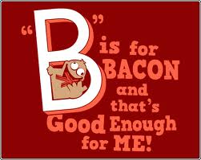

Interesting Facts About Bacon
Researched by SkyGuy
- Bacon Explosion has become one of the most googled bacon recipes in the world.
- Baconaisse (bacon flavored mayo) is vegetarian.
- September 3rd is International Bacon Day
- Bacon is addictive. It contains six types of umami, which produce neurological responses.
- Each year, the U.S. consumes over 1.7 Million pounds of bacon.
- Bacon cures hangovers.
- Bacon cologne was created in 1920 by a butcher named John Fafggindy.
- Bacon is one of the oldest processed meats in history.
- Bacon and eggs are eaten together 71% of the time.
- More than half of all homes always keep bacon on hand.
History of Bacon
Bacon or bacoun was a Middle English term used to refer to all pork in general. The term bacon comes from various Germanic and French dialects. It derives from the French bako, Old High German bakko, and Old Teutonic backe, all of which refer to the back. There are breeds of pigs particularly grown for bacon, notably the Yorkshire and Tamworth. The phrase “bring home the bacon” comes from the 12th century when a church in Dunmow, England offered a side of bacon to any man who could swear before God and the congregation that he had not fought or quarreled with his wife for a year and a day. Any man that could "bring home the bacon" was highly respected in his community.
Roman Era
According to food historians, the Romans ate a type of bacon which they called petaso, which was essentially domesticated pig boiled with figs, then browned and seasoned with pepper sauce.
1600's
Bacon, a relatively easy to produce and cheap meat source, becomes a staple for European peasants. Smoked Bacon is considered the highest quality.
1770's
John Harris, an Englishman, is credited as the forefather of large scale industrial bacon manufacturing. He opened his company in Wiltshire, still considered the bacon capital of the world.
1924
Oscar Mayer introduces pre-packaged, pre-sliced bacon to America.
1990's
Ordinary bacon is no longer enough to satisfy bacon lovers. Many varieties of bacon spin-offs appear, including Chicken-Fried Bacon and Bacon.
Other Bacon Products
For when the food just won't do.
{kind=link}
{kind=link}
{kind=link}
{kind=link}
- 'Got Bacon?' T-Shirt
- Bacon Tube Socks
- Bacon Necktie
- 'Bacon makes everything better' Boxer Shorts
- Mr. Bacon Air Freshener
- Bacon Lip Balm
- Bacon Soap
- Bacon iPhone Cover
- Bacon Hot Sauce
- Bacon Popcorn
- Bacon Salt (This should be a staple in every pantry!)
- Baconnaise (Bacon flavored mayo!)
- Bacon Soda
- Bacon Flavored Lube (For those of you that like to bring food into the bedroom.)
- Bacon Flavored Toothpicks
- Sizzlin' Bacon Flavored Candle
- Bacon Flavored Toothpaste
- Bacon Flavored Effervescent Drink Tabs
- Bacon Flavored cake Frosting
Contact Us
| Name | Department | |
|---|---|---|
| Heather Reese | Webmaster/Owner | mrsheatherreese@bacon.com |
| SkyGuy | Facts/Research | skyguy2003@bacon.com |